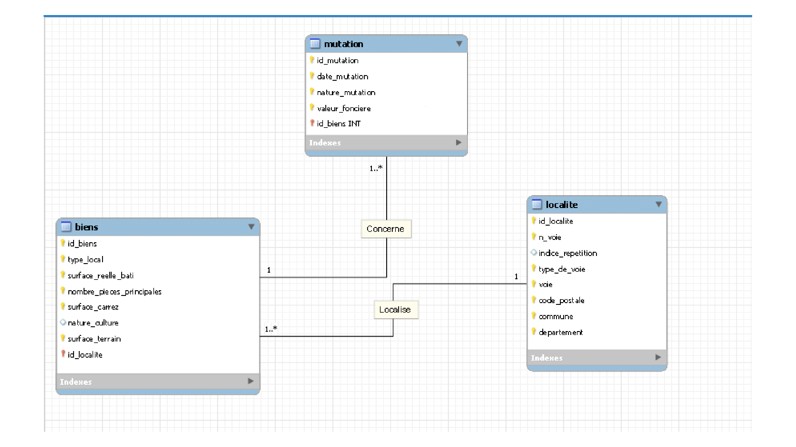

A partir d'un jeu de données immobilières extraites du site open data des DVF (demande de valeurs foncières), ce projet a pour but de créer une base de données permettant de collecter les transactions immobilières en France et de pouvoir analyser le marché.
Les différentes étapes du projet:
-Présentation des données.
-Présentation du dictionnaire de données.
-Création du MCD.
-Création du schéma.
-Création de la base de données.
-Présentation des requêtes et leurs résultats.
Comme énoncé plus haut les données ont été extraites du site open data des demandes de valeurs fonc ières (DVF).
Sur la totalité des données présentes dans le dataset de base et au vu des besoins, un tri des données a été fait.
Pour en savoir plus sur les données de ce projet voir la notice descriptive.
Voici le dictionnaire des données fait pour la création de la base de données.
Pour trier les données de base (environ 43 colonnes) et savoir lesquelles j'allais garder, j'ai eu recours à la notice descriptive des fichiers de valeurs foncières.
Ici vous pouvez prendre connaissance du modèle conceptuel de données réalisé dans le cadre du design de la base de données.
Le MCD créé permet de bien visualiser les différentes:
-entités (mutation, localite, biens)
-associations (une mutation concerne un bien, et un bien est localisé à une localité)
-les cardinalités (un bien peut avoir une ou plusieurs mutations et une mutation concerne un bien | un bien est localisé à une localité et une localité concerne plusieurs biens)
Concernant les appartements, la localité concerne la cage d’escalier et donc un bâtiment ayant une adresse (il peut contenir plusieurs appartements).
Un schéma normalisé 3NF a aussi été fait.
Dans le schéma il y a bien la présence des différents types de données, ainsi que les clés.
Les normes:
1 Chaque cellule a une valeur unique (les valeurs pour une colonne sont du même type et chaque ligne est unique).
2 Les attributs ne faisant pas partie de la clé primaire dépendent complètement de la clé primaire et non partiellement (par exemple pour l’indice de répétition, celui-ci dépend d’une adresse complète pour exister).
3 Un attribut n’appartenant pas à une clé primaire, ne dépend pas d’un autre attribut qui n’appartient pas à une clé.
Voici la partie préparation des données pour la base de données (faite en python).
Voici la création des tables et insertion des données.
Pour ce projet il était demandé de faire des requêtes.
Voici la liste des requêtes demandées:
1. Nombre total d’appartements vendus au 1er semestre 2020.
2. Proportion des ventes d’appartements par le nombre de pièces.
3. Liste des 10 départements où le prix du mètre carré est le plus élevé.
4. Prix moyen du mètre carré d’une maison en Île-de-France.
5. Liste des 10 appartements les plus chers avec le département et le nombre de mètres carrés.
6. Taux d’évolution du nombre de ventes entre le premier et le second trimestre de 2020.
7. Liste des communes où le nombre de ventes a augmenté d'au moins 20% entre le premier et le second trimestre de 2020.
8. Différence en pourcentage du prix au mètre carré entre un appartement de 2 pièces et un appartement de 3 pièces.
9. Les moyennes de valeurs foncières pour le top 3 des communes des départements 6, 13, 33, 59 et 69
Voici les différentes requêtes codées.
Voici les résultats des différentes requêtes.
Retour sur la page principale